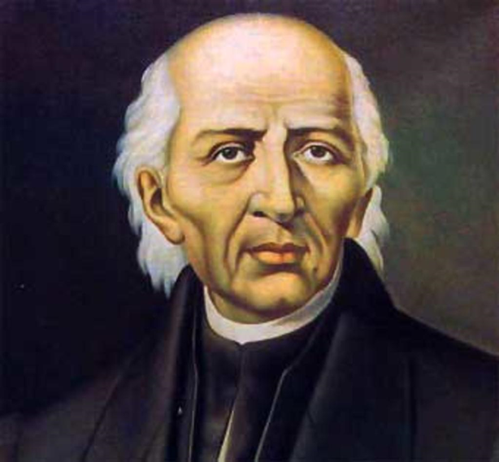

Miguel Gregorio Antonio Ignacion Hidalgo y Costilla Gallaga Mandarte Villaseñor (Hacienda de corralejo cerca de pénjamo, hoy Guanajuato, 8 de mayo de 1753 - Chihuhua, Chihuhua, 30 de julio de 1811) fue un sacerdote y militar novohispano que destacó en la primera etapa de la guerra de Independencia de Mexico, que inicio con un acto conocido de la historiografia mexicana como Grito de Dolores. Dirigío la primera parte del movimiento independista, pero tras una serie de derrotas fue capturado el 21 de marzo de 1811 y llevado prisionero a la ciudad de Chihuhua, donde fue juzgado y fusilado el 30 de julio.
